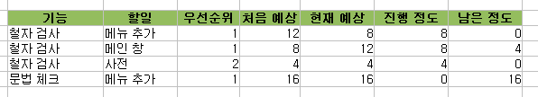

- 스프레드시트를 이용해서 관리하라.
- 단순하게 만들라.
*. 작업에 대해 '처음 예측', '현재 예측', '진행', '남은양' 을 만들어 계속 업데이트 하라.
- 각 기능은 여러개의 task 를 포함해야한다. task 목록을 작성하자.
- 담당 프로그래머가 제대로 된 일정을 짤 수 있다.
- task 를 세부적으로 나눠라
- 초기 예측과 현재 예측을 동시에 유지하라.
- 경과 열은 매일 갱신하라.
- 일정에 휴가나 휴일 같은 항목을 넣어라.
- 일정에 디버깅 시간을 넣어라.
- 일정에 통합 시간을 넣어라.
- 일정에 여유 기간을 두어라.
*. 일은 생각보다 오래 걸린다. 예측 시간에 비해 현재 예측이 길어질 경우가 많으므로 그 때 이 여유 기간을 써라.
- 관리자가 프로그래머에게 일정을 단축하도록 절대 강요하지 못하게 하라.
- 일정은 장난감 블록과도 같다.
*. 일정에 따라 기능을 쳐내든지 발표를 연기하라. 기능을 쳐내는 것을 두려워하지 마라.
일정을 제대로 잡는 것도 연습이 필요하고, 그것을 정리하는 것이 필요하다라... 해볼까나...